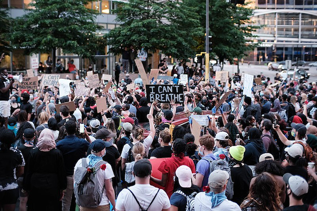

FIVE LARGEST PROTESTS IN U.S. HISTORY

Image Credit: TK
The tradition of protests that demand progrssive change in the United States continue.
Here the top five protests in the country in terms of attendance:
- George Floyd protests nationwide in 2020 with an estimated 26 million protestors
- Women's March in 2017 drew about 5.6 million people nationwide.
- March for Our Lives, a student led protest in 2018 against gun violence, drew abut 2 million people
- Women's March in 2018 drew about 1.5 millio protestors.
- March on Washington for Lesbian, Gay, and Bi Equal Rights and Liberation drew about 1 million people in 1993
Compiled from Wikipedia